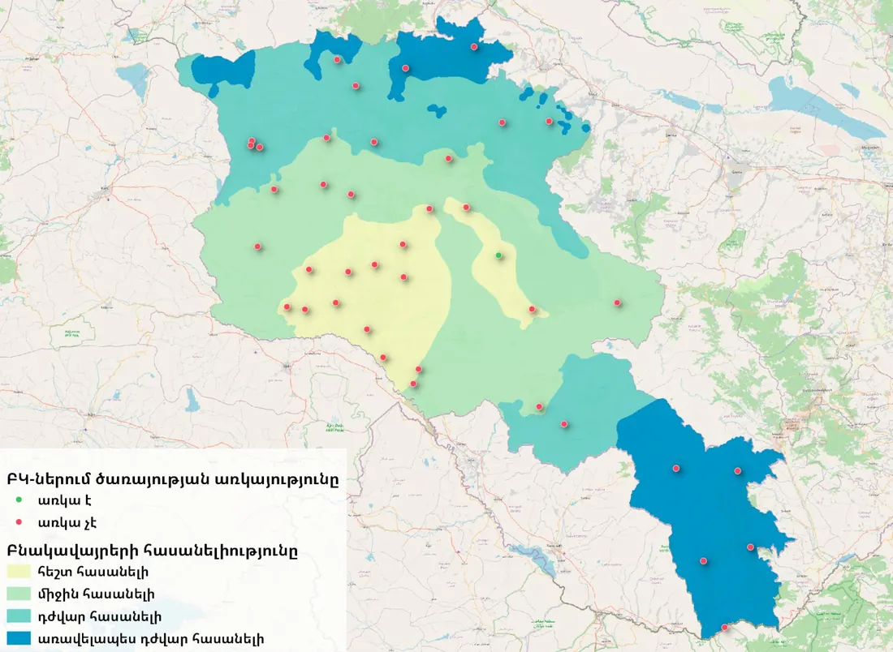
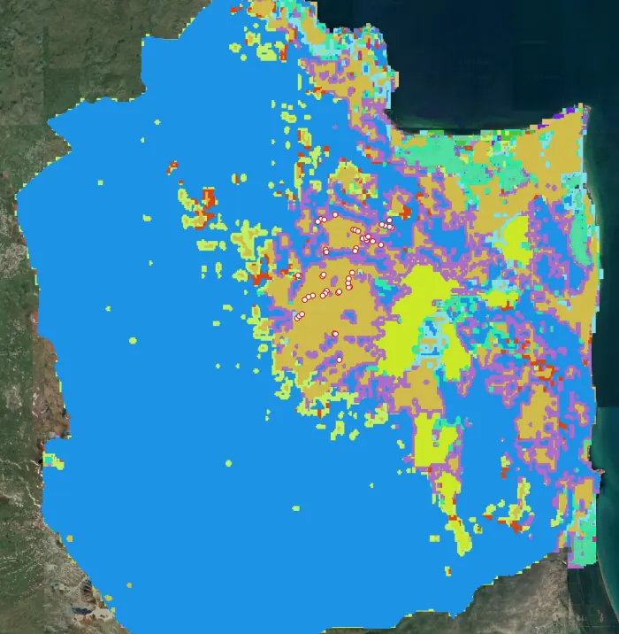
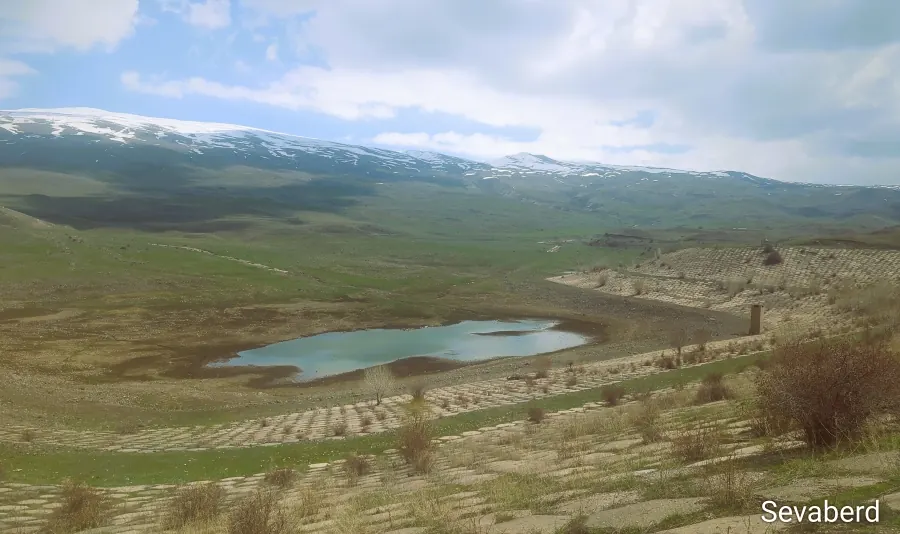
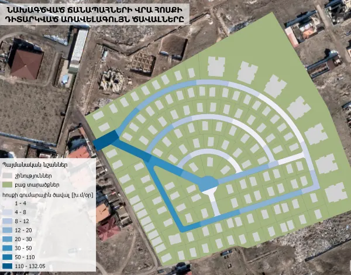
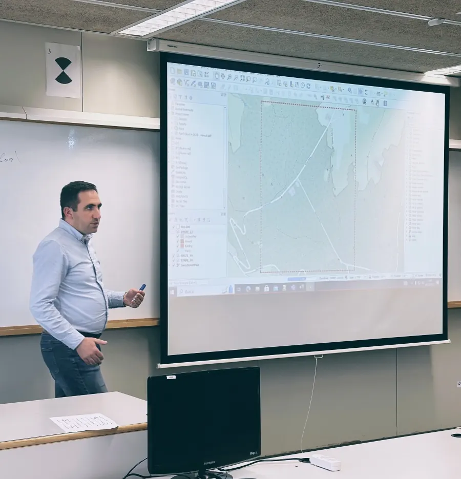

ГИС · Гидрология · Моделирование наводнений
Услуги
Услуги в области ГИС, гидрологии и моделирования наводнений
00ГИС-анализ
ГИС-анализ
Наши услуги ГИС-анализа превращают данные в стратегический инструмент и позволяют увидеть пространственные связи и закономерности, незаметные в таблицах и тексте.
Потяните, чтобы повернуть
Услуги в области геоинформационных систем (ГИС)
Пространственные закономерности, которые не видны в таблицах: пригодность территорий, выбор площадок, оптимизация маршрутов, кадастр, NDVI и мониторинг снежного покрова.
Наши услуги ГИС-анализа превращают данные в стратегический инструмент и позволяют увидеть пространственные связи и закономерности, незаметные в таблицах и тексте.
- Сельское хозяйство: Анализ пригодности земель для сельскохозяйственных культур.
- Градостроительство: Выбор площадок для инфраструктуры с учётом градостроительных ограничений.
- Логистика: Оптимизация маршрутов доставки и сокращение затрат.
- Государственный сектор: Градостроительное планирование и управление кадастровыми данными.
- Охрана окружающей среды: Сохранение экосистем и картографирование загрязнения.

Решения на основе дистанционного зондирования позволяют динамично отслеживать обширные территории без физического присутствия на местности и логистических затрат.
- Индекс NDVI: Дистанционная оценка здоровья растений и темпов роста.
- Водная сфера: Анализ динамики снежного покрова на отдельных территориях.
- Лесной фонд: Предварительная оценка очагов пожаров.
- Влажность почвы: Оценка влажности почвы на орошаемых территориях.
- Мониторинг бедствий: Картографирование последствий наводнений и оползней.

Водные ресурсы и гидрологические услуги
Исследования водосборных бассейнов и речного стока по международным стандартам, а также 1D/2D-моделирование опасности наводнений на рельефе высокого разрешения.
Мы выполняем высокоточное гидрологическое моделирование водосборных бассейнов и речного стока в программных пакетах, соответствующих международным стандартам.
- Энергетика: Оценка и оптимизация стока для ГЭС.
- Водоснабжение: Распределение запасов питьевой и оросительной воды.
- Инженерное проектирование: Полные гидрологические изыскания для гидротехнических проектов.
- Сельское хозяйство: Планирование оросительных систем с учётом рельефа.
- Научные исследования: Влияние изменения климата на водную сферу.

Мы выполняем 1D/2D-гидравлическое моделирование риска наводнений на основе топографических данных высокого разрешения (DEM/DTM) и сценариев интенсивности осадков.
- Оценка опасности: Оценка вероятности и силы наводнений.
- Планирование: Создание стратегических карт противопаводковой защиты.
- Городская среда: Моделирование формирования наводнений в городской среде.
- Страхование: Оценка инфраструктуры, уязвимой к последствиям водных бедствий.

ГИС-образование
Курсы от начального до профессионального уровня на данных реальных проектов: картография, пространственный анализ, гидравлическое моделирование.
У нас есть специализированные курсы по QGIS, ArcGIS Pro, HEC-RAS и Google Earth Engine — от начинающих до опытных специалистов.
- Практическое обучение: Работа с реальными проектами и базами данных.
- Владение инструментами: Изучение ведущих программных пакетов ГИС и гидрологии.
- Картография: Подготовка итоговых карт — веб и статических.
- Пространственный анализ: Применение методов обработки данных и статистики.
